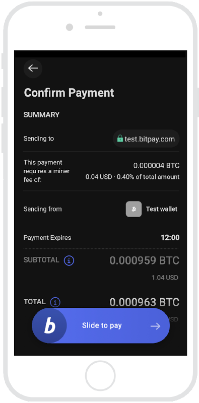
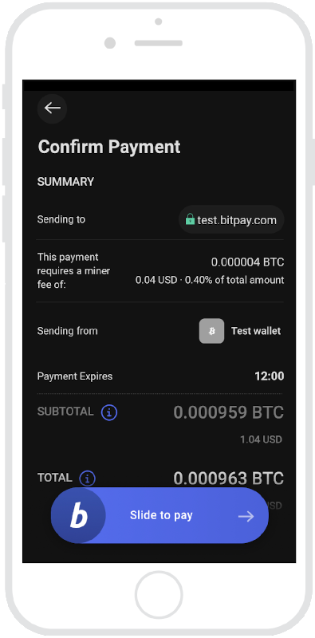

# Bitcoin Basics
## Curiosity Hour
### by Matthias Buhler
> welcome
# Bitcoin Basics
## Abstract
Bitcoin and other "Cryptos" are real electronic money - existing, operating currencies - made out of bits and trust
(and sweat and tears and coffee and pizza ... and carbon dioxide ...)
* How is it working?
* Why is Bitcoin failsafe and trustworthy (by now)?
> Let's have a deeper look into Bitcoin - step by step.
Alice
- likes ice cream
- owns Bitcoins
Bob
- sells ice cream
- likes Bitcoins
 

What's the buzz?
- What does "owning Bitcoins" mean (technically)?
- How do Bitcoins change hands?
- How are new Bitcoins created?
- How to cheat?
- How it began? (optional)
Let's first learn about the stuff that forms Bitcoin ...
# Ingredients of Bitcoin
### an overview
* _Software specifications_ ([protocols](https://en.bitcoin.it/wiki/Protocol_documentation), [rules](https://en.bitcoin.it/wiki/Protocol_rules)
and [reference implementation](https://github.com/bitcoin/bitcoin))
* _Digital Signing_, based on private/public key pairs ([ECDSA](https://en.bitcoin.it/wiki/Protocol_documentation#Signatures))
* _Cryptographic hashing_ ([SHA-256](https://en.bitcoin.it/wiki/Protocol_documentation#Hashes))
* _Transactions_ (formed out of the above)
* The _Blockchain_ (the holy grail - containing transactions)
* A _Network_
* _Consensus, Trust and Privacy_ (as being common for any currency)
> But Bitcoin also excels in its ...
` `
` `
` `
` `
` `
` `
### non-ingredients
* governments or politics
* a central authority
* (maybe except of the developer community)
* banks and accounts
* personal identification
* garlic
> Lets now learn more about the mystic _Blockchain_ ...
# The Blockchain
## is
* a (well defined) datastructure
* an _append only_ database
* a distributed ledger
* a container for transactions
* maintained and synchronized by many parties
* downloadable and publicly readable (no secrets)
* as the name suggests: a chained list of _blocks_
* where each block
* is identified by its _hash_ value (over all its content)
* references its predecessor by its _hash_
` `
` `
` `
` `
` `
` `
` `

# A Transaction
* is an assignment of a certain amount of bitcoins from one party to another one
* actually a random number of parties can be involved
* is identified by its _hash_ value (over all its content)
* referes to one or more earlier transactions as _input_
* referes to one or more _public keys_ as _output_
* the new bitcoin _owners_ are the ones that hold the respective _private key_
* is signed by the owners of the _input_ transactions
## A transactions's data structure

` `
` `
` `
` `
` `
` `
` `
` `
` `
` `
` `
` `
[... what about a live example?](https://live.blockcypher.com/btc/tx/22f918952e4e5485d46d3953b27ea38dacad9ea69852d06023d32fb974c90f41/)
# Some more datail
## What happens in Bob's and Alice's wallet app?
* simple version
* Bob's wallet app displays a QR code with a public key (the private counterpart is stored in the wallet)
* advanced version
* Bob's wallet app creates a "Transaction Request",
* uploads that to a special server and
* displays a QR code with an URL pointing to that request.
Apart from the public key the request data also contains the price to pay and informative fields (eventually a bill as PDF).
> continued on next page ...
### ... anyway
> ... payment continued
* Alice scans the QR code with her wallet app.
* The app detects the data type. If its a request URL, the app downloads the data from the server.
* The app displays the available data and asks Alice for completion and/or confirmation.
* Alice's wallet app creates the transaction. For this only Bob's public key and the amount of Bitcoin parts are necessary.
# How is the transaction build?
* __The transaction always has to be build by the spender__ (Alice).
* Alice's wallet app looks up one or more previous (unspent!) transactions to her name (key!)
* These transactions (resp. their hash) go into the new transaction's __input__.
* The wallet creates and adds a __signing__ of the previous transaction with Alice's __private key__
(that the wallet needs to have in store).
* Bob's __public key__ and the purchase price go into the output.
* The __change amount__ with Alice's __public key__ goes also into the output.
* The wallet suggests a certain amount as __mining fee__ (some Euro cent).
* You can increase this amount in order to boost the priority.
* Finally the transaction's __hash value__ gets calculated.
* Then the transaction is transmitted to a __Bitcoin node__.
> The node is a part of ...
# The Bitcoin-Network ...
* are thousands of node instances, running free of charge or reward by volonteers.
* There are different types of nodes: full, super, light, mining nodes, etc.
* They differ in the amount of data that hey store and process and in the actions they can take.
* The nodes form a __P2P network__ over the internet.
* A node's duties are:
* Maintaining a __list of other nodes__.
* Holding a __copy of the Blockchain__ (or at least parts of it).
* __Validation__ (checking, accepting or refusing) of __new blocks__.
* The same for __new transactions__.
* Distributing all kind of __valid__ data items to other nodes.
> And not to forget ...
# Mining of new blocks
* Collect a bunch of new transactions (re-assert they are valid)
* Fill the mandatory metadata and calculate the hash value.
* Don't forget to grant yourself the mining fees and the mining reward!
* Solve the puzzle.
> ... eh, what?
* The hash of a block needs to meet certain criteria to be considered valid.
> ... ooh, and how to do that?
* Trial & error! There are a number of meaningless fields in the block (_nonce_) that can be randomly set
in order to change the hash value.
> And what if another miner finds a valid block before me?
* Then you lost, next round!
# Mining challange
## What is that particularly?
* The block is only considered valid if the hash value (read as an integer number) is less than a certain limit (called _difficulty_).
* The difficulty has to be recalculated every 2016 created blocks (~ 2 weeks).
* It depends on the time that the miners needed to create this amount of blocks.
* The _more efficient_ the miners were the _more difficult_ the challange gets.
* This calculation is determined by the _amount of transactions_ that is raised and the _computer power_
that is deployed to satisfy that demand.
# Why is the mining challange necessary?
* The creation of new blocks is the most sensible part of the process.
* The goal is to have many miners competing with each other in
* being as __efficient__ as possible (the mining award does not depend on the number of transactions that a block contains)
* proofing their loyality to the rules by setting a stake.
* The __stake__ is to invest in computer hardware and electricity consumption. This is called "proof-of-work".
* Honest miners with sufficient hardware and great endurence will compensate their efforts - and maybe more than that!
* Fraud miners risk their blocks not being accepted by the network.
* The mining reward is the only mechanism to create new Bitcoins.
* It decreases according to a rule: every 210.000 blocks it gets halved. Currently the reward is 6,25 BTC (~ 190.000 €).
* In the near future it will be ceased completely.
# Critisism and evaluation of Bitcoin
### The downside
* No "proof-of-sustainibility" - each bitcoin comes with an amount of CO².
* Great mining activities in poor countries with cheap energy prices
* Public power supply gets exhausted.
* Attempts for governmental regulation scared potential users.
* Bitcoin didn't make it to an every day's payment vehicle, but ...
* ... it is established well for speculation and money laundry.
# Critisism and evaluation of Bitcoin
### The not so down sides
* Bitcoin is a great example of civil engagement resisting governmental control for many years.
* Bitcoin pushed technology to provide and societies to accept a new way of economy that is not controlled by authorities.
* ... and it is a great data science research area (Big Data, AI, ...)
### What else
* In the lee of Bitcoin many similar projects evolved (so called "Altcoins"), e.g. Ethereum, Stellar, ...
* Many of these alternatives strive to overcome Bitcoins downsides and keep its benefits,
e.g. by non-exhaustive consensus mechanisms, binding their exchange rates to fiat currencies, etc.
* Others extended the use cases by digital certificates or contracts.
# Thanks for listening
## Sources
* [https://www.coursera.org/learn/cryptocurrency](https://www.coursera.org/learn/cryptocurrency)
* [https://bitcoin.org](https://bitcoin.org)
* [https://bitcoin.it](https://bitcoin.it)
> Take care of your money :-)